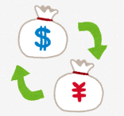

中国での両替やチップについて
両替は中国に着いてから空港かホテルで
日本円を中国で元に両替する際は、
中国に着いてから現地の国際空港出口ロビーの銀行や、ホテルの両替所を利用するようにしましょう。
両替は少量ずつ、中国で行うようにしましょう。
日本の空港などの民間両機関で両替するとレートが悪い上に高い手数料を取られてしまいます。中国ではホテル内の正規両替所や銀行など、どこで変えてもレートはあまり変わりませんが、日本で替えるよりいいので、両替は現地についてからにしましょう。
両替するときにもらえる「両替証明書」は、
あまった人民元を日本円に再両替する際に必要なので、捨てずに保管しておきます。
再両替は帰りの中国の空港の中にある銀行で可能で、両替した金額の５０％までを日本円に戻すことが出来ます。ただし
再両替のレートはかなり悪いので、
一度にたくさんのお金を両替しないようにするのがコツです。中国では極端に高い物を買う以外、それほどたくさんの現金は必要ありません。また日本へ元を持って帰っても、日本で両替するのは面倒なので、少しずつで問題ないです。
クレジットカードは使えないお店が多いので免税店やホテルの支払い以外、一般的なお店などではあまり活躍する機会が少ないです。
中国でチップは必要？
チップについてですが、
中国では基本的に必要ありません。
高級ホテルなどで、個人的なお願いをした場合や、係員の対応がよかった場合などは、20～50元程度渡してもかまいません。
タクシーの運転手に場所を探してもらったり、待ってもらったり、急いでもらったりしたときは、端数を切り上げて（４８元なら５０元渡す）などするといいですが、
中国ではサービス精神がほとんどないので、渡さなくても全く問題ないです。
もちろベッドメイキングの際のチップなども不要です。 レストランなどでもチップは不要です。
中国旅行注意に戻す